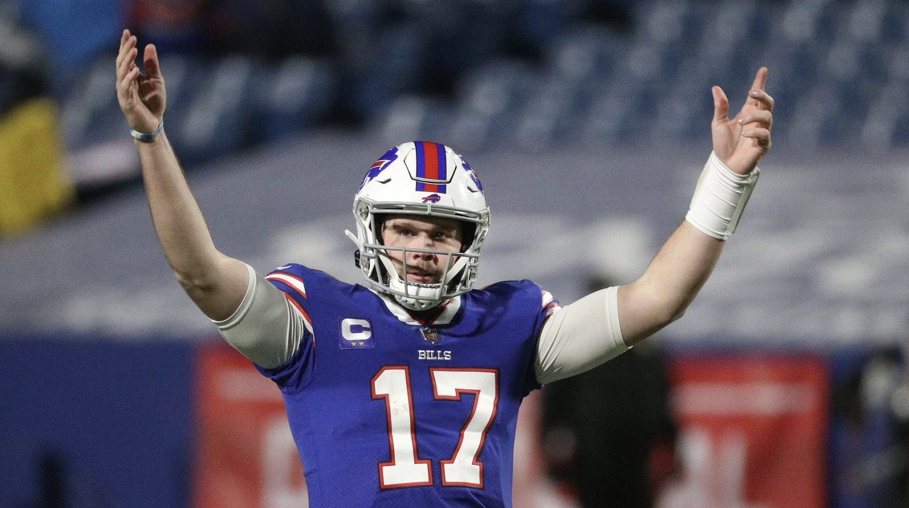

Josh Allen: The Future of the Buffalo Bills
Josh Allen, the star quarterback for the Buffalo Bills, has taken the NFL by storm since being drafted in 2018. With his powerful arm and exceptional athleticism, Allen has quickly become one of the league's top quarterbacks and a fan favorite in Buffalo. Coming out of the University of Wyoming, Allen faced skepticism from analysts who questioned his accuracy and ability to adapt to the NFL's faster pace. However, with a tireless work ethic and unrelenting determination, Allen has silenced his critics and emerged as the face of the Bills franchise. In his rookie season, Allen showed glimpses of his potential, displaying impressive arm strength and mobility. By his second year, he made significant strides, leading the Bills to their first playoff appearance in nearly two decades. In the 2020 season, Allen had a breakout year, setting numerous franchise records and finishing as the runner-up for the NFL MVP award. Allen's success can be attributed to his relentless drive to improve. He has worked closely with quarterback coach Jordan Palmer, refining his mechanics and honing his decision-making skills. In addition, Allen's leadership and competitive spirit have galvanized his teammates, fostering a culture of resilience and determination in Buffalo. As the Bills continue to build around their franchise quarterback, the future looks bright for both Allen and the team. With his talent, work ethic, and commitment to excellence, Josh Allen is poised to lead the Buffalo Bills to new heights in the coming years.
Buffalo Bills' Offseason Moves: Strengthening the Roster
The Buffalo Bills made some significant offseason moves, bolstering their roster with key acquisitions and draft picks. With an eye on building a championship-caliber team, General Manager Brandon Beane and Head Coach Sean McDermott focused on addressing areas of need and adding depth to the roster. One of the key acquisitions was the signing of veteran pass rusher Von Miller. A future Hall of Famer, Miller brings a wealth of experience and a proven ability to disrupt opposing offenses. His presence will bolster the Bills' pass rush and provide valuable mentorship to the team's young defensive linemen. In the draft, the Bills prioritized adding talent to their defensive line by selecting edge rusher Carlos Basham Jr. and defensive tackle Harrison Phillips. Both players are expected to make an immediate impact, further strengthening the team's front seven. The Bills also added depth to their offensive line, signing veteran guard Forrest Lamp and drafting tackle Spencer Brown. These moves will provide valuable protection for quarterback Josh Allen and help create running lanes for the team's talented backfield. With these additions, the Bills have addressed key areas of need and positioned themselves for continued success in the coming seasons. As the team prepares for the upcoming season, fans can look forward to watching a stronger and more balanced Buffalo Bills team on the field.
Sean McDermott: The Coach Behind the Bills' Resurgence
Since his arrival in 2017, head coach Sean McDermott has played a pivotal role in transforming the Buffalo Bills into a formidable NFL team. With a strong emphasis on culture, accountability, and attention to detail, McDermott has instilled a winning mentality in Buffalo that has resonated with players and fans alike. Prior to McDermott's arrival, the Bills had endured a lengthy playoff drought and struggled to find consistent success. However, with his background as a defensive coordinator and experience under legendary coach Andy Reid, McDermott brought a fresh perspective and renewed energy to the organization. In his first season at the helm, McDermott led the Bills to their first playoff appearance since 1999. Since then, the team has continued to improve, culminating in a 13-3 record and an AFC Championship appearance in the 2020 season. This success has been driven by McDermott's commitment to creating a cohesive and disciplined team, with players who are dedicated to the team's goals and principles. McDermott's coaching philosophy is built on a foundation of strong defense, efficient offense, and excellent special teams play. He has assembled a talented coaching staff, including offensive coordinator Brian Daboll and defensive coordinator Leslie Frazier, who share his vision and work tirelessly to develop and implement effective game plans. Under McDermott's leadership, the Bills have seen several players reach new heights in their careers, including quarterback Josh Allen, wide receiver Stefon Diggs, and cornerback Tre'Davious White. By fostering an environment of hard work, open communication, and mutual respect, McDermott has helped these players unlock their full potential and become leaders on the field. As the Buffalo Bills continue their pursuit of an elusive Super Bowl title, Sean McDermott's impact on the team's resurgence cannot be overstated. His ability to develop talent, instill discipline, and create a winning culture has positioned the Bills as a perennial contender in the NFL. With McDermott at the helm, the future looks bright for the Buffalo Bills and their passionate fan base.